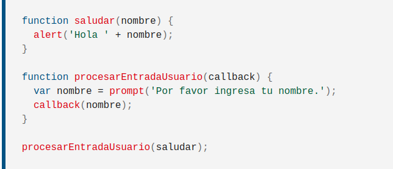

Vanilla Javascript es quan s'utilitza Javascript "plà", sense cap llibreria adicional com podria ser Jquery. La gent fa broma recordant a altres programadors que avui en dia es poden fer moltes coses sense llibreries adicionals.
JavaScript va ser creat per Brendan Eich, que treballava per l'empresa NetScape
Oracle Corporation
Les arrow function, fan la mateixa feina que les funcions, però amb una sintàxi més curta i senzilla. Van aparèixer al ES6, a l'any 2015
Un callback és una fucnció que es passa a un altre funció com a argument. Despres la invoquem dins de la funció externa per tal de completar alguna acció.
Un exemple de callback seria:

Una promise a JavaScript, representa un valor que pot estar disponible ara, en un futur, o mai.
new Promise( /* ejecutor */ function(resolver, rechazar) { ... } );new